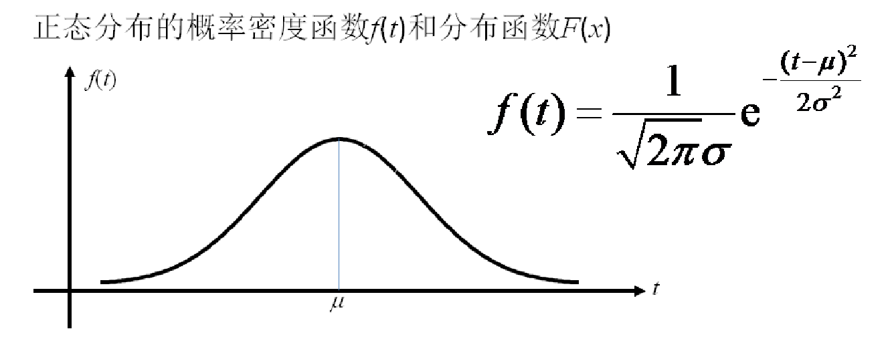

2 常用概念¶
1、绝对数和相对数
绝对数：是反应客观现象总体在一定时间、一定地点下的总规模、总水平的综合性指标，也是数据分析中常用的指标。比如年GDP，总人口等等。
相对数：是指两个有联系的指标计算而得出的数值，它是反应客观现象之间的数量联系紧密程度的综合指标。相对数一般以倍数、百分数等表示。相对数的计算公式：
相对数=比较值（比数）/基础值（基数）
2、百分比和百分点
百分比：是相对数中的一种，它表示一个数是另一个数的百分之几，也称为百分率或百分数。百分比的分母是100，也就是用1%作为度量单位，因此便于比较。
百分点：是指不同时期以百分数的形式表示的相对指标的变动幅度，1%等于1个百分点。
3、频数和频率
频数：一个数据在整体中出现的次数。
频率：某一事件发生的次数与总的事件数之比。频率通常用比例或百分数表示。
4、比例与比率
比例：是指在总体中各数据占总体的比重，通常反映总体的构成和比例，即部分与整体之间的关系。
比率：是样本(或总体)中各不同类别数据之间的比值，由于比率不是部分与整体之间的对比关系，因而比值可能大于1。
5、倍数和番数
倍数：用一个数据除以另一个数据获得，倍数一般用来表示上升、增长幅度，一般不表示减少幅度。
番数：指原来数量的2的n次方。
6、同比和环比
同比：指的是与历史同时期的数据相比较而获得的比值，反应事物发展的相对性。
环比：指与上一个统计时期的值进行对比获得的值，主要反映事物的逐期发展的情况。
7、变量
变量来源于数学，是计算机语言中能储存计算结果或能表示值抽象概念。变量可以通过变量名访问。
8、连续变量
在统计学中，变量按变量值是否连续可分为连续变量与离散变量两种。在一定区间内可以任意取值的变量叫连续变量，其数值是连续不断的，相邻两个数值可作无限分割，即可取无限个数值。如:年龄、体重等变量。
9、离散变量
离散变量的各变量值之间都是以整数断开的，如人数、工厂数、机器台数等，都只能按整数计算。离散变量的数值只能用计数的方法取得。
10、定性变量
又名分类变量：观测的个体只能归属于几种互不相容类别中的一种时，一般是用非数字来表达其类别，这样的观测数据称为定性变量。可以理解成可以分类别的变量，如学历、性别、婚否等。
11、缺失值
它指的是现有数据集中某个或某些属性的值是不完全的。
12、异常值
指一组测定值中与平均值的偏差超过两倍标准差的测定值，与平均值的偏差超过三倍标准差的测定值，称为高度异常的异常值。
13、期望
数学期望(mean)（或均值，亦简称期望）是试验中每次可能结果的概率乘以其结果的总和，是最基本的数学特征之一。 它反映随机变量平均取值的大小。 需要注意的是，期望值并不一定等同于常识中的“期望”——“期望值”也许与每一个结果都不相等。
14、均值
即平均数，平均数是表示一组数据集中趋势的量数，是指在一组数据中所有数据之和再除以这组数据的个数。
import numpy as np
l = [1,2,3,4,5]
np.mean(l)
15、分位数
分位数（Quantile），也称分位点，是指将一个随机变量的概率分布范围分为几个等份的数值点，分析其数据变量的趋势。 常用的有中位数、四分位数、百分位数等。
l = [1,2,3,4,5,6,7,8,9]
np.quantile(l, 0.25)
16、中位数
对于有限的数集，可以通过把所有观察值高低排序后找出正中间的一个作为中位数。如果观察值有偶数个，通常取最中间的两个数值的平均数作为中位数。
l = [1,2,3,4,5,6,7,8,9]
np.median(l)
17、方差
是衡量随机变量或一组数据时离散程度的度量。概率论中方差用来度量随机变量和其数学期望（即均值）之间的偏离程度。统计中的方差（样本方差）是每个样本值与全体样本值的平均数之差的平方值的平均数。在许多实际问题中，研究方差即偏离程度有着重要意义。方差是衡量源数据和期望值相差的度量值。
l = [1,2,3,4,5,6,7,8,9,10]
m = np.mean(l)
l2 = list(map(lambda x: (x-m)**2, l))
v = np.mean(l2)
# 或者
v = np.var(l)
18、标准差
又常称均方差，是离均差平方的算术平均数的平方根。标准差是方差的算术平方根。标准差能反映一个数据集的离散程度。平均数相同的两组数据，标准差未必相同。
l = [1,2,3,4,5,6,7,8,9,10]
m = np.mean(l)
l2 = list(map(lambda x: (x-m)**2, l))
s = np.sqrt(np.mean(l2))
# 或者
s = np.std(l)
19、协方差
协方差是对两个随机变量联合分布线性相关程度的一种度量。两个随机变量越线性相关，协方差越大，完全线性无关，协方差为零。定义如下。
cov(X,Y)=E[(X−E[X])(Y−E[Y])]
X = np.array([[1,5,6],[4,3,9]])
c = np.cov(X)
c结果如下：
array([[ 7. , 4.5 ],
[ 4.5 , 10.33333333]])
其中c[0,0]表示X[0]和X[0]计算得到协方差
c[0,1]表示X[0]和X[1]计算得到协方差，其他以此类推
20、相关系数
相关系数是最早由统计学家卡尔·皮尔逊设计的统计指标，是研究变量之间线性相关程度的量。由于研究对象的不同，相关系数有多种定义方式，较为常用的是皮尔逊相关系数。
21、皮尔逊相关系数
皮尔森相关系数是用来反映两个变量线性相关程度的统计量。用r表示，其中n为样本量，分别为两个变量的观测值和均值。r描述的是两个变量间线性相关强弱的程度。r的绝对值越大表明相关性越强。

X = np.array([[1,5,6],[4,3,9]])
r = np.corrcoef(X)
r结果如下
array([[1. , 0.52910672],
[0.52910672, 1. ]])
其中r[0,0]表示X[0]和X[0]计算得到相关系数
r[0,1]表示X[0]和X[1]计算得到相关系数，其他以此类推
22、概率分布
概率分布是指随机变量X小于任何已知实数x的事件可以表示成的函数。 用以表述随机变量取值的概率规律。 描述不同类型的随机变量有不同的概率分布形式。
23、正态分布
正态分布（Normal distribution），又名高斯分布（Gaussian distribution），是一个在数学、物理及工程等领域都非常重要的概率分布，在统计学的许多方面有着重大的影响力。正态曲线呈钟型，两头低，中间高，左右对称因其曲线呈钟形，因此人们又经常称之为钟形曲线。若随机变量X服从一个数学期望为μ、方差为σ2的正态分布，记为N(μ，σ2)。其概率密度函数为正态分布的期望值μ决定了其位置，其标准差σ决定了分布的幅度。当μ = 0,σ = 1时的正态分布是标准正态分布。

np.random.normal(loc, scale, size)
loc:概率分布的均值，对应着整个分布的中心center
scale:概率分布的标准差，对应于分布的宽度，scale越大越矮胖，scale越小，越瘦高
size:输出的shape，默认为None，只输出一个值
np.random.normal(loc=0, scale=1, size=10)
生成10个服从均值为0，标准差为1的正态分布
画图展示
import matplotlib.pyplot as plt
plt.hist(np.random.normal(loc=0, scale=1, size=100000), bins=500)
plt.show()
![]()